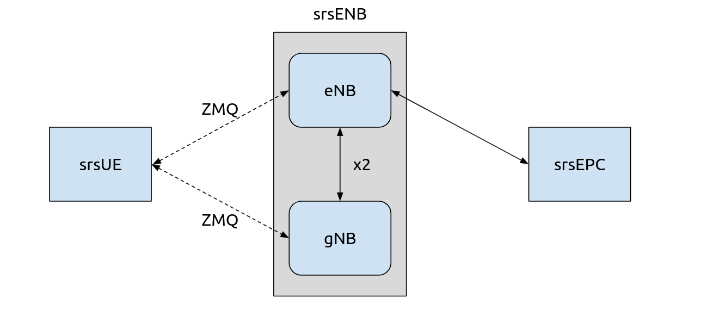

5G NSA 端到端
提示
srsENB 支持 NSA 和 SA 操作模式的原型 5G 功能，但是，这些功能不再处于积极开发中。相反，我们推荐 srsRAN Project，我们的 ORAN-native 5G CU/DU 解决方案。
srsRAN 21.10 版本为 SRS eNodeB 应用程序 (srsENB) 提供了 5G NSA 支持。 5G NSA 功能可通过 srsENB 配置文件启用。 本应用笔记介绍了如何使用 srsUE、srsENB 和 srsEPC 创建端到端 5G NSA 网络。 ZMQ 虚拟无线电用于代替物理 RF 硬件。
5G NSA 概述

5G NSA 模式 3
5G 非独立模式通过构建并使用预先存在的 4G 基础设施来提供 5G 支持。 除了主 4G 载波外，还提供了辅助 5G 载波。首先连接 5G NSA UE 连接到辅助 5G 运营商之前先连接到 4G 运营商。使用4G锚 用于控制平面信令，而 5G 载波用于高速数据平面流量。
迄今为止，这种方法已用于大多数商业 5G 网络部署。它提供 提高数据速率，同时利用现有的 4G 基础设施。 UE 必须支持 5G NSA 才能利用 5G NSA 服务，但现有 4G 设备不会中断。
网络和硬件概述
对于本应用笔记，我们将使用 零MQ 代替物理 RF 硬件。详细说明如何 用srsRAN安装和使用ZMQ可以找到 这里。本应用笔记假设您事先了解 ZMQ 与 srsRAN 的使用。

网络架构的简化概述
此设置需要满足以下条件：
srsUE 在单独的网络命名空间中运行
srsENB 配置为在运行时创建 LTE eNB 和 NSA gNB 单元
srsEPC，其中 UE 包含在订户列表中
使用RF-硬件
要使用 RF 硬件创建物理端到端网络，需要满足以下条件：
网元 |
RF-前端 |
基于 Linux 的 PC |
|---|---|---|
srsUE |
X3xx USRP |
X |
srsENB 和 srsGNB |
X3xx USRP |
X |
超级EPC |
X |
此类设置需要两个 X3xx 系列 USRP 和 2 个 Linux PCS。
建议使用 X3xx系列 USRP 与一个 UBX子板。还可能支持其他具有双通道 Tx 和 Rx 以及独立 RF 链的 RF 硬件。
网络配置
需要更改srsUE和srsENB的配置文件。这些更改允许使用 ZMQ，还启用 srsENB 中的 5G NSA 载波。无需更改 srsEPC 配置。
本说明中使用的示例配置文件可供下载。这里只包含修改后的配置，默认配置可以在其他地方使用。以下各节概述了所有更改。
srsUE
对于 srsUE 需要进行相关更改 ue.conf 启用 ZMQ 和 5G NR 功能。
ZMQ
根据中的描述 ZMQ 应用说明，启用 ZMQ 设备名称 和 设备参数 必须改变在 [射频] 部分：
设备名称 = 兹米克
设备参数 = tx_端口0=TCP协议://*:2001,接收端口0=TCP协议://本地主机:2000,发送端口1=TCP协议://*:2101,接收端口1=TCP协议://本地主机:2100,编号=厄,基本速率=23.04e6
此处，我们添加两个 TX 和两个 RX 通道以支持 4G 主载波和 5G 辅助载波，如网络图中所示。
要完成 ZMQ 设置，网络命名空间 网络 必须设置在 [GW] 设置：
[GW]
网络 = UE1
NR RAT
UE 的 5G NR 功能还必须在配置中启用 [大鼠.nr] 部分：
[老鼠.号]
乐队 = 3,78
nof_运营商 = 1
这里我们启用频段 3 和 78，分别是 FDD 和 TDD 频段。通过将两者都包含在 UE 配置中，我们可以通过配置网络来测试每种双工模式。
NR载波数需要设置为1，否则UE将无法连接到gNB。如果未设置，将导致 UE 仅具有 LTE 连接。
发布
由于 NSA 模式是 3GPP 的一部分 发布15，这必须反映在配置中。使用的默认版本是 8。在 [RRC] 字段：
[RRC]
释放 = 15
血清ENB
两者都需要做出改变 enb配置文件 和 日志配置文件 启用 5G NSA。
基站配置
首先应进行启用 ZMQ 所需的更改。这涉及到改变 设备名称 和 设备参数 在 [射频] 部分：
设备名称 = 兹米克
设备参数 = 断开连接失败=真实,tx_端口0=TCP协议://*:2000,接收端口0=TCP协议://本地主机:2001,发送端口1=TCP协议://*:2100,接收端口1=TCP协议://本地主机:2101,编号=恩布,基本速率=23.04e6
与 UE 类似，有两个 TX 和两个 RX 通道。这些通道映射到 UE 上配置的相关端口。
enb.conf 中不需要进行其他更改。
RRC 配置
对 rr.conf 文件的主要更改是将 NR 单元添加到单元列表中。这被添加到文件的末尾：
编号单元列表 =
(
{
射频端口 = 1;
小区编号 = 0x02;
塔克 = 0x0007;
PCI = 500;
根序列idx = 204;
// TDD:
//dl_arfcn = 634240;
//乐队 = 78;
// FDD:
dl_arfcn = 368500;
乐队 = 3;
}
);
这里我们添加了 TDD 和 FDD 配置。对于本示例，我们将使用 FDD 配置，因此 TDD 配置被注释掉。 TDD 和 FDD 配置可以互换 通过停止 srsENB，对此文件进行必要的更改，然后重新启动 srsENB。
网络设置
通过以上配置，现在就可以启动网络了。首先运行 EPC，然后运行 eNodeB 和 UE。
EPC
首先运行EPC：
须藤 SRSEPC
然后您应该会看到与以下类似的输出：
高速钢 已初始化.
微机电系统 S11 已初始化
微机电系统 GTP-C 已初始化
微机电系统 已初始化. 中冶集团: 0xf001, 跨国公司: 0xff01
SPGW GTP-U 已初始化.
SPGW S11 已初始化.
SP-GW 已初始化.
基站
接下来运行 eNB/gNB：
须藤 斯尔森布
如果 srsENB 正确启动，将看到以下输出或类似输出：
开幕 2 渠道 在 RF 装置=兹米克 与 参数=断开连接失败=真实,tx_端口0=TCP协议://*:2000,接收端口0=TCP协议://本地主机:2001,发送端口1=TCP协议://*:2100,接收端口1=TCP协议://本地主机:2101,编号=恩布,基本速率=23.04e6
CHx 基本速率=23.04e6
CHx 编号=恩布
当前 样品 率 是 1.92 兆赫兹 与 一个 基地 率 的 23.04 兆赫兹 (x12 抽取)
CH0 接收端口=TCP协议://本地主机:2001
CH0 发送端口=TCP协议://*:2000
CH0 断开连接失败=真实
频道1 接收端口=TCP协议://本地主机:2101
频道1 发送端口=TCP协议://*:2100
==== eNodeB 开始了 ===
类型 <t> 到 查看 痕迹
当前 样品 率 是 11.52 兆赫兹 与 一个 基地 率 的 23.04 兆赫兹 (x2 抽取)
当前 样品 率 是 11.52 兆赫兹 与 一个 基地 率 的 23.04 兆赫兹 (x2 抽取)
设置 频率: DL=2680.0 兆赫兹, UL=2560.0 兆赫兹 为了 cc_idx=0 nof_prb=50
设置 频率: DL=1842.5 兆赫兹, UL=1747.5 兆赫兹 为了 cc_idx=1 nof_prb=52
请注意如何创建两个单元，ID 分别为 0 和 1。0 是 LTE 单元，1 是 NR 单元。
如果 eNB 成功连接到核心，EPC 的控制台跟踪应该会更新。
UE
UE 现在应该使用以下命令运行：
须藤 斯苏埃
如果它成功运行并连接到 eNB/gNB，您应该看到类似以下内容：
Opening 2 channels in RF device=zmq with args=tx_port0=tcp://*:2001,rx_port0=tcp://localhost:2000,tx_port1=tcp://*:2101,rx_port1=tcp://localhost:2100,id=ue,base_srate=23.04e6
CHx base_srate=23.04e6
CHx id=ue
Current sample rate is 1.92 MHz with a base rate of 23.04 MHz (x12 decimation)
CH0 rx_port=tcp://localhost:2000
CH0 tx_port=tcp://*:2001
CH1 rx_port=tcp://localhost:2100
CH1 tx_port=tcp://*:2101
Waiting PHY to initialize ... done!
Attaching UE...
Current sample rate is 1.92 MHz with a base rate of 23.04 MHz (x12 decimation)
Current sample rate is 1.92 MHz with a base rate of 23.04 MHz (x12 decimation)
.
Found Cell: Mode=FDD, PCI=1, PRB=50, Ports=1, CP=Normal, CFO=-0.2 KHz
Current sample rate is 11.52 MHz with a base rate of 23.04 MHz (x2 decimation)
Current sample rate is 11.52 MHz with a base rate of 23.04 MHz (x2 decimation)
Found PLMN: Id=00101, TAC=7
Random Access Transmission: seq=33, tti=981, ra-rnti=0x2
RRC Connected
Random Access Complete. c-rnti=0x46, ta=0
Network attach successful. IP: 172.16.0.3
Software Radio Systems RAN (srsRAN) 13/10/2021 15:29:9 TZ:0
RRC NR reconfiguration successful.
Random Access Transmission: prach_occasion=0, preamble_index=0, ra-rnti=0xf, tti=1611
Random Access Complete. c-rnti=0x4601, ta=0
以下消息 RRC NR 重新配置 成功的 确认 UE 已连接到 NR 单元。这将用于数据链路，而 LTE 单元将
用于控制消息传递。
eNB 和 EPC 控制台也将看到更新。
测试网络
可以通过网络发送流量来测试连接。使用任一 平 或 iperf3 允许流量从 UE 发送到 gNB。使用示例平 可以
被发现于 ZMQ 应用说明，所以对于这个例子 iperf3 将被使用。
性能
在此设置中，客户端将在 UE 端运行，服务器在网络端运行。 UDP 流量将以 10Mbps 的速度生成，持续 60 秒。运行 iperf 客户端时，我们使用 UE 网络命名空间并指定网络侧 IP 地址。首先启动服务器，然后启动客户端，这一点很重要。
网络侧
启动 iPerf 服务器：
iperf3 -s -我 1
然后，它将侦听来自 UE 的流量。
UE-侧
网络和 iPerf 服务器启动并运行后，可以使用以下命令从 UE 的网络命名空间运行客户端：
须藤 ip 网络 执行 UE1 iperf3 -c 172.16.0.1 -乙 10中号 -我 1 -t 60
现在流量将从 UE 发送到 eNB。这将显示在服务器和客户端控制台中，也会显示在 UE 和 eNB 的跟踪中。示例 客户 iPerf 输出：
正在连接 到 主机 172.16.0.1, 港口 5201
[ 5] 本地的 172.16.0.2 港口 52484 已连接 到 172.16.0.1 港口 5201
[ 身份证号] 间隔 转乘 比特率 雷特尔 控制命令
[ 5] 0.00-1.00 秒 954 千字节 7.81 兆比特/秒 0 79.2 千字节
[ 5] 1.00-2.00 秒 1.12 兆字节 9.44 兆比特/秒 0 126 千字节
[ 5] 2.00-3.00 秒 1.00 兆字节 8.39 兆比特/秒 12 49.5 千字节
[ 5] 3.00-4.00 秒 640 千字节 5.24 兆比特/秒 2 42.4 千字节
[ 5] 4.00-5.00 秒 512 千字节 4.19 兆比特/秒 2 39.6 千字节
[ 5] 5.00-6.00 秒 512 千字节 4.19 兆比特/秒 2 33.9 千字节
示例 服务器 iPerf 输出：
-----------------------------------------------------------
服务器 倾听 上 5201
-----------------------------------------------------------
已接受 连接 来自 172.16.0.2, 港口 52482
[ 5] 本地的 172.16.0.1 港口 5201 已连接 到 172.16.0.2 港口 52484
[ 身份证号] 间隔 转乘 比特率
[ 5] 0.00-1.00 秒 634 千字节 5.19 兆比特/秒
[ 5] 1.00-2.00 秒 950 千字节 7.78 兆比特/秒
[ 5] 2.00-3.00 秒 977 千字节 8.00 兆比特/秒
[ 5] 3.00-4.00 秒 533 千字节 4.36 兆比特/秒
[ 5] 4.00-5.00 秒 553 千字节 4.53 兆比特/秒
[ 5] 5.00-6.00 秒 537 千字节 4.40 兆比特/秒
UE 跟踪
可以通过输入来启用 UE 控制台跟踪 t 在 UE 控制台上。跟踪每秒更新一次。
注意事项
指标报告之间的时间间隔可以在 UE 配置文件中更改 [一般] 字段，通过改变值 指标_周期_秒.
如果流量成功通过网络发送，则 UE 控制台跟踪应如下所示：
---------信号-----------|-----------------DL-----------------|-----------UL-----------
老鼠 PCI 参考值 PL 首席财务官 | MCS 信噪比 迭代器 布拉特 布勒 塔我们 | MCS 浅黄色 布拉特 布勒
LTE 1 -11 11 -1.4你 | 0 142 0.0 0.0 0% 0.0 | 0 0.0 0.0 0%
号 500 1 0 23你 | 27 70 1.0 8.5中号 0% 0.0 | 28 36k 8.3中号 0%
LTE 1 -11 11 -1.4你 | 0 142 0.0 0.0 0% 0.0 | 0 0.0 0.0 0%
号 500 1 0 23你 | 27 70 1.0 9.2中号 0% 0.0 | 28 24k 8.1中号 0%
LTE 1 -11 11 -1.4你 | 0 142 0.0 0.0 0% 0.0 | 0 0.0 0.0 0%
号 500 2 0 23你 | 27 69 1.0 4.6中号 0% 0.0 | 28 19k 4.2中号 0%
LTE 1 -11 11 -1.3你 | 0 142 0.0 0.0 0% 0.0 | 0 0.0 0.0 0%
号 500 2 0 23你 | 27 69 1.0 5.0中号 0% 0.0 | 28 26k 4.8中号 0%
LTE 1 -11 11 -1.4你 | 0 142 0.0 0.0 0% 0.0 | 0 0.0 0.0 0%
号 500 2 0 23你 | 27 69 1.0 4.7中号 0% 0.0 | 28 28k 4.7中号 0%
的 老鼠 字段报告指标是否与 NSA 5G 链路 (nr) 或 LTE 链路 (lte) 关联。
eNB/gNB 跟踪
eNB/gNB 跟踪也可以通过输入来启用 t 在控制台上。每秒报告一次指标。
注意事项
这也可以在 eNB 配置文件中更改，位于 [专家] 标题，通过改变的值 指标_周期_秒.
如果流量传输成功，控制台跟踪应如下所示：
-----------------DL----------------|-------------------------UL-------------------------
老鼠 rnti 奇奇 里 MCS 布拉特 好的 诺克 (%) | 普施 普奇 份数 MCS 布拉特 好的 诺克 (%) 巴塞尔
LTE 46 15 0 0 0 0 0 0% | n/一个 n/一个 0 0 0 0 0 0% 0.0
号 4601 n/一个 0 27 6.9中号 124 0 0% | n/一个 n/一个 0 0 6.1中号 95 0 0% 0.0
LTE 46 15 0 0 0 0 0 0% | n/一个 n/一个 0 0 0 0 0 0% 0.0
号 4601 n/一个 0 27 4.4中号 92 0 0% | n/一个 n/一个 0 0 4.2中号 76 0 0% 0.0
LTE 46 15 0 0 0 0 0 0% | n/一个 n/一个 0 0 0 0 0 0% 0.0
号 4601 n/一个 0 27 5.2中号 113 0 0% | n/一个 n/一个 0 0 5.0中号 94 0 0% 0.0
LTE 46 15 0 0 0 0 0 0% | n/一个 n/一个 0 0 0 0 0 0% 0.0
号 4601 n/一个 0 27 5.4中号 118 0 0% | n/一个 n/一个 0 0 5.3中号 99 0 0% 0.0
LTE 46 15 0 0 0 0 0 0% | n/一个 n/一个 0 0 0 0 0 0% 0.0
号 4601 n/一个 0 27 7.6中号 156 0 0% | n/一个 n/一个 0 0 7.2中号 129 0 0% 0.0
与 UE 控制台跟踪类似， 老鼠字段表示报告的指标与哪个链接相关联。
图形用户界面

srsGUI 还支持在 NSA 模式下与 UE 一起使用。上面可以看到生成的图的示例。
要启用 srsGUI，请参阅 这里.
注意事项
如果您已经在没有 srsGUI 支持的情况下构建了 srsRAN，则必须在构建 srsGUI 后重新构建。